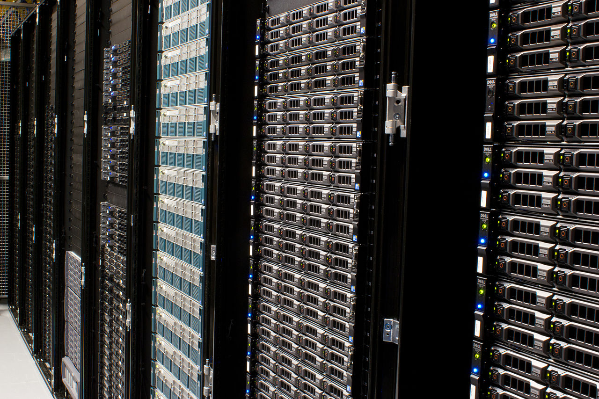
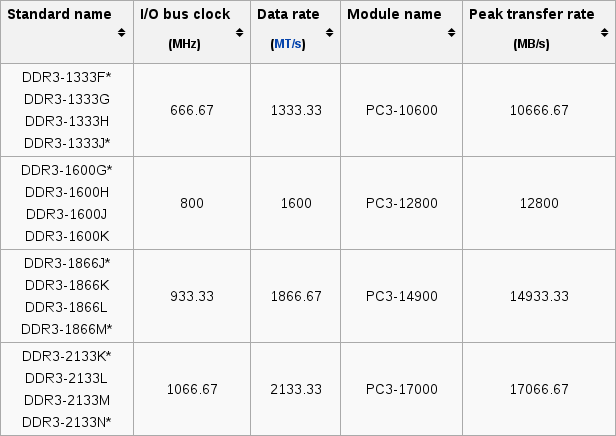

Hardware
Accounting Architecture - Information and Technology

Now that we know the steps in the information and Big Data life cycles and understand what a system should do, we can begin to investigate what a system should be, or in other words, what a system should comprise. The information life cycle applies to both digital and non-digital systems, but because of the prevalence of information technology, we will focus exclusively on the creation of digital information systems.
Technology Roadmap
Over the next several weeks, we will discuss four different aspects of information technology:
- Hardware: the physical components of the information system.
- Software: operating systems and server- and client-side applications.
- Storage: physical and logical data storage.
- Services: networking and cloud computing.
All four aspects are interdependent, and each plays a vital role in enterprise-grade information systems. We begin with hardware because it is the most basic and foundational part of an information system. Without hardware, nothing else is possible. (Later we will discuss exceptions to this last statement...)
Let Us Build a Computer!
Perhaps the best method to teach the hardware components of an information system is to build a hypothetical computer step-by-step and explain what purpose each additional component serves.
An information system can have workstations, servers, mobile devices, laptops, wearable technology, etc. Although each of these has similar internal components, both the visibility and modularity of the individual pieces are greater with workstations and servers, so we will focus on these. Although the roles of workstations—for personal computing—and servers—for cloud computing— are different, their hardware makeup is largely the same. These steps can apply to either.
Where Shall We Begin?
Each computer part influences the possible specifications of the other parts, so it is difficult to determine where to start. We will assume that the first consideration is available space. The component that determines the size of the computer is the case. Several sizes exist, and beyond aesthetics, the size determines the type of motherboard, access to expansion slots, and rackability (i.e., the ability to store the computer in a server rack).
Server Racks
Despite their fancy moniker and appearance, nothing is special about server racks. They are simply special closets for computers that use a certain type of case. Racks are convenient for organizing these computers and may include lockable doors for added physical security. (We will discuss the role of physical security with the Control section of the course.)
Second Step
Most every other hardware selection is the result of the choice of central processing unit (CPU). In importance, it exceeds that of the case, so we could have started with the selection of a CPU, but since we hypothesized that space was the first consideration, we will focus on the processor second.
Central Processing Unit
The central processing unit (CPU) carries out the computer instructions by fetching data from memory, performing an operation on the data and returning the result of the operation to memory. Important considerations when choosing a CPU are architecture and speed. Additionally, because the CPU generates heat, it is necessary to cool it with either a fan or a heatsink or a combination of the two.


Arch
The manner in which the CPU interprets computer instructions depends on the instruction set architecture (ISA). Since the inception of the CPU, manufacturers have offered many different architectures, but currently, two are the most prominent. Software that runs on one architecture is inherently incompatible with any other.
X86
In 1978, Intel released the 8086 processor. Although the instruction set has since expanded, the 8086 processor launched the x86 line of processors which Intel continues to offer as the most popular architecture in personal computers and many servers. Advanced Micro Devices is also well known for their x86-compatible lines of processors. These processors rely on complex instruction set computing (CISC).
ARM
Another popular line of processors have the ARM architecture which implement reduced instruction set computing (RISC), which as its name indicates, contains fewer potential instructions than CISC. Unlike Intel, ARM Holdings is not a manufacturer of processors. Instead, it licenses its intellectual property to several other manufacturers, such as Broadcom, Qualcomm, Samsung, Freescale, etc. (As of this writing, SoftBank Group has initiated a purchase ARM Holdings.) Because of the smaller instruction set, these processors require less power, which makes them a popular choice for mobile devices.
Word Length
Computer processing also depends on word length or the number of bits the CPU can process at once. Currently, the two most common word lengths are 32 and 64 bits. One of the limitations of 32-bit processors is that they only support 4 gigabytes of random-access memory (RAM). Prior to the introduction of 64-bit processors, manufacturers would add physical address extension to 32-bit processors that would remove the 4 GB cap. In addition to increasing speed by allowing for the processing of more bits at one time, 64-bit processors can accommodate up to 16 exabytes of memory. The 64-bit architecture is frequently labeled by the abbreviation x64 or x86_64 to signify the connection to the x86 instruction set or ARM64 to signify connection to ARM.
Compatibility
CPU architecture affects software compatibility, in that software written for x86 will not run on ARM CPUs and vice versa. A similar restriction applies to word length. Software written for x86 or ARM will not run on their 64-bit counterparts without additional help, and software written for x86_64 or ARM64 will not run on their 32-bit counterparts at all. Because the overwhelming majority of new processors are 64-bit, most new software is also 64-bit, and devices with older, 32-bit processors have suddenly begun to become quickly obsolete.
Real-world Problem
Unfortunately, the limitations of 32-bit word length extends beyond processing speed and memory caps. Similar to the Y2K bug in which, in order to save storage space, programmers dropped the first two digits of the year leading to uncertainty how computers would interpret 00, the Y2K38 bug represents the inability of 32-bit processors to count forward in time past 03:14:08 on 19 January 2038.

(Incidentally, in multiple cases the Y2K bug resulted in clocks reporting 1 January 19100, which is neither 2000 nor 1900...)
How Fast?
Both word length and instruction set affect the efficiency and speed of a processor, but the common measures of processor speed are clock speed and instructions per second or floating-point operations per second (FLOPS). The most familiar of these is clock speed or the number of cycles per second, which is calculated in Hertz. This is the metric used to computer and CPU advertisements. A cycle is the period of time in which the processor can execute an instruction. Because processors may be able to execute more than one instruction per cycle, a more useful measure of performance may be instructions per second which is the product of clock speed and instructions per cycle.
Multi-core Processors
In recent years, CPU clock speeds have increased dramatically, but it is not possible to increase clock speed forever. However, it is possible to add additional CPUs to one computer or even additional cores to a single CPU to improve performance with parallel processing. Current CPUs can have as many as ten or more cores. The theoretical upper bound of the FLOPS of a multi-core processor is the FLOPS of a single core multiplied by the number of cores, but realized performance is always less because of both hardware and software constraints.
Mother Lode

The third component to select is the motherboard. The motherboard is a circuit board that holds the system components and allows communication between them. Some motherboards also include integrated audio, video, and network capabilities. The size and shape of the computer case and the type of CPU socket restrict the type of motherboard. Different CPUs fit into different sockets.
Never Forget
In addition to a CPU, each computer requires random-access memory (RAM). RAM, frequently simply referred to as memory, is a type of volatile computer storage—volatile means that it requires electricity to store data—that allows for fast retrieval of data. The greater the amount of memory, the faster the computer can operate because it can store more data in this fast-retrieval repository. Currently, RAM takes on the form of double data rate synchronous dynamic random-access memory (DDR SDRAM). The motherboard constrains RAM size, speed, and capacity.

Keeping Up with the Jones
Speed is important for RAM, just as it is for a CPU. This is a list of common transfer speeds of the third generation of DDR SDRAM.
Although RAM allows for fast data retrieval, it cannot supply data to the CPU as fast as the CPU can process it, so RAM always creates a bottleneck for computer processing.
Multiplicity
An individual stick of memory comes in two sizes: dual in-line memory module (DIMM) or small outline dual in-line memory module (SO-DIMM). The former is generally for workstations and servers, and the latter is for notebooks, smaller form-factor personal computers, and network hardware. The motherboard's memory slots determine maximum memory capacity and speed. DIMMs currently have common capacities of 2GB, 4GB, 8GB and 16GB, and motherboards generally have two or four slots. It is not necessary to fill all slots, nor is it necessary for all DIMMs to have the same capacity or speed. However, the computer will function at the speed of the slowest DIMM.
Hard ≠ Solid
In addition to volatile storage, a computer needs non-volatile storage. Customarily, this takes the form or either hard disk drives (HDD) or solid-state drives (SSD). Hard drives are mechanical and rely on multiple magnetized spinning disks to read and write data. Solid-state drives generally use NAND flash memory to read and write data more quickly. The speed with which the motherboard can access data from the drive is determined by the speed of the Serial AT Attachment (SATA) connection to the drive calculated in gigabits per second.


Swapping
Historically, a computer could not handle consumption of all available memory because the CPU would not be able to find the next instruction. Virtual memory overcame this problem by reserving a portion of the hard drive as secondary memory, called swap space. If most of the physical memory was reserved, the operating system would move some of the data stored in physical memory to the swap space to free up physical memory. The process of moving data from main memory to secondary memory is called paging. Although it allows a computer to continue functioning, paging is very slow because accessing data from drives is slower than access data from RAM, and the computer can become unresponsive as a result.
Seeing is Believing
Although not necessary, many computers also contain a video card. These cards contain their own processing unit, called a graphical processing unit (GPU), their own fan or heatsink, and their own memory (GDDR or SGRAM). These cards can draw graphical objects more quickly than a CPU. Many current computers require no video card because newer processors (e.g. i3 Intel processors) have both CPU cores and integrated GPU cores. Graphics cards contain ports for connecting monitors, and motherboards also contain these ports for use with CPU-integrated graphics. Servers, which generally use no graphical environment, need no graphics capabilities beyond what the CPU can provide.
GPU Computing
Although servers generally need no GPU for rendering graphics, the benefits of GPUs extend beyond the traditional uses for desktop graphics and 3D gaming. Because graphics cards generally have many GPU cores (100+), whereas CPUs frequently have between 2 and 8 cores, GPUs are useful for repeatedly performing simple operations. The GPU cores cannot perform many of the complex tasks that CPUs can handle, but their ability to share simple tasks across a plethora of cores allows them to perform some tasks more efficiently than their CPU counterparts. This is particularly useful for Big Data analytics, which involves repetitious processing of bits of data.
Powering It All

The final requisite component is the power supply unit (PSU), which gives power directly to storage drives and indirectly to the CPU, RAM, and other components through the motherboard. The computer case determines the maximum supported PSU size, but the more important consideration is power needed. It is difficult to determine exactly how much power will be necessary for a specific setup, but for a standard workstation or server 600 watts can suffice.
How Would This Be Different for Mobile Devices?
Although mobile devices, such as smartphones and tablets, include the same set of components, the configuration looks different to conserve on space and energy. For example, instead of including a CPU, DIMMs of memory, and a graphics card, these devices have a System on a Chip (SoC), in which CPU cores, memory, GPU cores, and sometimes cell radios, are combined into a single chip. Many, though not all, of these use ARM processors because they further reduce energy consumption and generate less heat. However, Intel has fervently reduced the gap between x86 and ARM processors in an attempt to become more attractive to manufacturers of mobile devices.
SoC is for SBC
One common use for System on a Chip is Single Board Computers (SBCs). SBCs have a motherboard that differs from those found in workstations and servers. SBC boards have all components: CPU, GPU, RAM, etc., soldered onto the board. These take less space and use less energy than their larger counterparts. Although tablets and smartphones almost certainly use SBCs, the most well-known example of an SBC is the Raspberry Pi.

Accounting Tie-in
It goes without saying that accountants could not function without computer hardware. Historically, invoices, customer orders, job tickets, time cards, etc., have been paper documents, and accounting journals and ledgers were literal journals and ledgers. Even if we ignore the additional data collection, analysis, and reporting roles that accountants must assume in the current technological environment, the conversion of accounting documents to accounting data, even in small businesses, makes computer hardware indispensable. Understanding the role each hardware component plays allows accounting architects to understand how to meet, efficiently and effectively, the performance needs of the users of the information system.